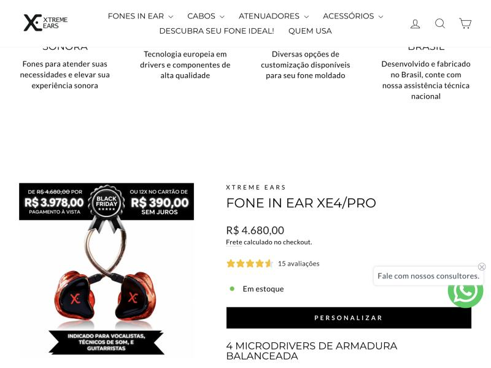
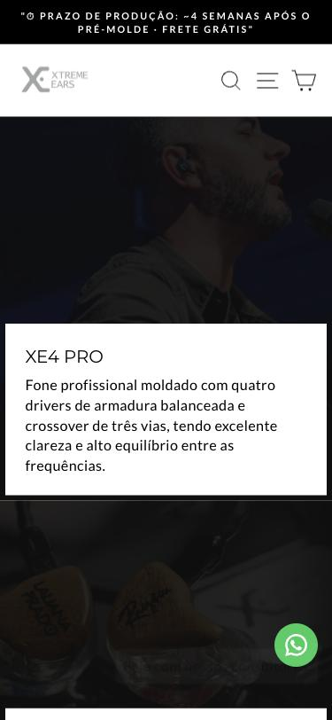
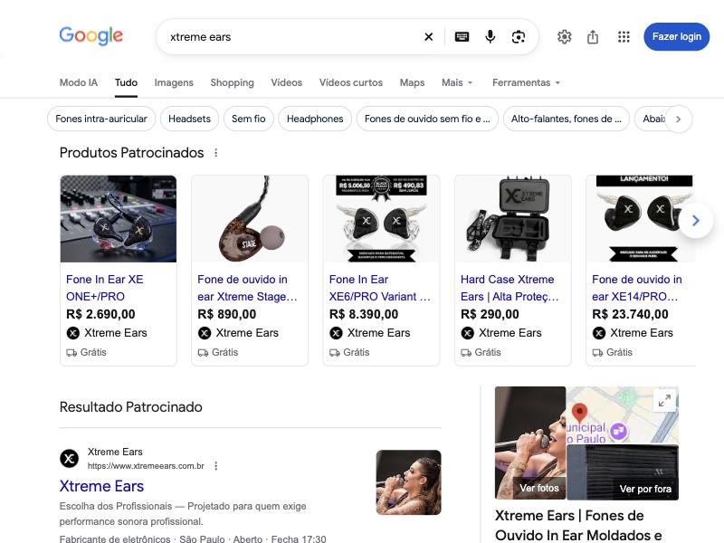

O site é bonito e a marca é forte. O que trava a venda é outra coisa: o cliente vê três preços diferentes para o mesmo fone, precisa rolar quase quatro telas até o botão de compra e só descobre depois de pagar que ainda precisa ir a uma fonoaudióloga.
O anúncio promete um valor, a página cobra outro e a promoção só existe dentro da foto.
Quem chega do anúncio no celular não vê preço, nota nem botão sem rolar 3,6 telas.
Um fone de R$ 4 mil fecha no WhatsApp, e o clique no WhatsApp não volta para o Google Ads como conversão.
Valores coletados no mesmo dia, no site, nas imagens do produto, no cadastro da Shopify e nos anúncios do Google Shopping.
| Onde aparece | XE4 PRO | XE12 PRO |
|---|---|---|
| Texto da página de produto | R$ 4.680,00 | a partir de R$ 11.890,00 |
| Selo Black Friday gravado na foto | R$ 3.978 à vista 12x R$ 390 | R$ 10.106,50 à vista 12x R$ 990,83 |
| Anúncio no Google Shopping | R$ 3.390,00 | R$ 16.440 e R$ 18.990 |
| "Preço de" cadastrado na Shopify | R$ 3.690 (menor que o "por") | não cadastrado |


XE4 de 3.690 por 4.680, Stage de 690 por 890, XE5 de 4.390 por 5.290, Stage com microfone de 790 por 990. A Shopify não mostra o riscado nesse caso, então a Black Friday não aparece em texto em nenhum lugar do site.
Correção: cadastrar o preço cheio em "Comparar com" e o valor promocional em "Preço", e mostrar "ou 12x de R$ 390 sem juros" em texto abaixo do preço.
No XE4, o preço fica a cerca de 2.470px do topo no desktop e o botão Personalizar a 3,6 telas no celular, depois de banners grandes. A primeira dobra chega a abrir como um bloco preto enquanto o banner carrega.
Correção: preço, parcelas, nota 4,9 e botão na primeira tela. Os banners de som e acabamento vão para baixo do bloco de compra.
O personalizador diz que as instruções do pré-molde chegam por e-mail depois do pedido. Antes de pagar, ninguém diz que é preciso ir a uma fonoaudióloga, quanto isso custa nem onde fica a mais próxima. Uma reclamação de 2026 no Reclame Aqui sobre o XE4 cita "custos extras".
Correção: bloco "Como funciona" em quatro passos na página do produto, com custo médio do molde e lista de fonoaudiólogas por cidade.
adaptador-conector-usb-c-copia com o título "Lightning - iPhone"xtreme-stage-aquiles-priester-copia com o título "XE3Pro"cpb-order-…) visíveis na lista pública de produtosSão mais de dez escolhas antes do carrinho. "Nome no fone" é obrigatório, e o aviso de erro aparece num pop-up roxo fora da identidade da marca. No XE4, o bloco "Você pode gostar também" recomenda o próprio XE4.
A home faz cerca de 196 requisições, soma 2,2 MB e leva 8,9 s para carregar por completo. Os banners são PNG de até 3840px. O tema publicado se chama "MÊS DO ROCK - Principal backup 03/07", uma cópia de julho ainda no ar em novembro.
/collections/frontpage
Os títulos saem como "Fone In Ear XE6/PRO Variant for price 8390" e "XE12/PRO Variant for price 14700". Essas são variantes geradas pelo app do personalizador. O feed também anuncia as versões mais caras (XE14 a R$ 23.740) e um "XE3Pro Aquiles Priester" a R$ 1.027, que é uma cópia com o título errado.
Correção: enviar só a variante base de cada fone, com título limpo, e excluir do feed as variantes do personalizador, as cópias e os produtos de teste.
Na busca "fone in ear moldado", o anúncio aparece com o título "Fone Gamer In Ear Intra-Auricular Profissional", que não é o que um músico procura nessa busca.
Correção: separar os grupos de anúncio por intenção: moldado para palco, universal, gamer e atenuador.
O Reclame Aqui aparece acima do segundo anúncio, e "xtreme ears reclame aqui" é uma sugestão do Google. A página está sem reputação, com 13 dias de tempo médio de resposta e reclamações de 2026 ainda sem avaliação.
Correção: responder em até 48h e pedir aos clientes atendidos que avaliem a reclamação.
O sitelink "Fale Conosco: Preencha seus dados" leva a um formulário, um passo a mais para quem já buscou a marca. O perfil no Google tem nota 4,9 com 381 avaliações, mas está na categoria "Fabricante de eletrônicos", mostra o telefone (11) 3256-2692 enquanto o site só mostra o WhatsApp, e essa nota não aparece no site.
Correção: trocar os sitelinks por "Ver modelos e preços", "Como funciona o molde" e "Parcele em 12x".
As fotos de produto são boas e profissionais. O problema é o selo de preço dentro da imagem: ele contradiz o texto do site e fica velho quando a promoção acaba. Para quem busca a marca, o primeiro resultado orgânico é a página "Como comprar?", e não a home.
Corrigir "Comparar com" e "Preço" em todos os fones, mostrar o parcelamento em texto e tirar os selos de dentro das fotos.
Variante base com título limpo, sem as variantes do personalizador. Arquivar o produto de teste e as cópias.
Mensagem pré-preenchida por página ("Oi, vim pelo XE4 PRO"), evento de conversão no clique e envio das vendas fechadas no WhatsApp ao Google como conversão offline.
Preço, parcelas, nota 4,9 e botão Personalizar no topo, com o bloco "Como funciona" logo abaixo. Os banners editoriais vão para o fim.
Quatro passos: escolhe, paga, faz o molde na fonoaudióloga (com custo médio e lista por cidade) e recebe em cerca de 4 semanas.
Grupos de anúncio por intenção e sitelinks que levam para modelos, molde e parcelamento.
Levar os artistas da página "Quem usa" (Gilberto Gil, Anitta, Wesley Safadão e outros) e as avaliações do Google para junto do bloco de compra.
Títulos sem o sufixo antigo, /collections/fones-moldados com redirecionamento, um H1 por produto, alt nas imagens, especificações com unidade, banners em WebP, apps sem uso removidos e resposta rápida no Reclame Aqui.